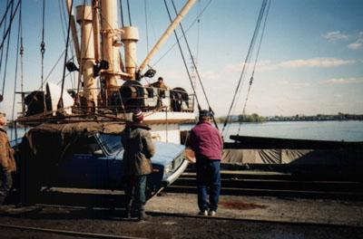
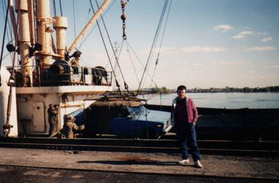
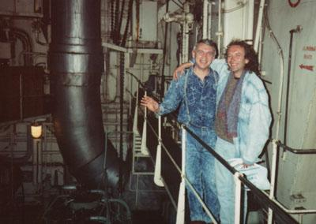

Une autre Lada rentre chez elle.
Mais elles n' ont pas toutes cette chance.

Celle-ci était attendue.
On la manipule avec grand soin.
Remarquez comme elle est bien protégée par une toile.
Ensuite vient la satisfaction du travail accompli.

Il est évident qu' il y a plusieurs dessous à cette histoire,
qui ne peuvent tous être ici mentionnés.
Mais je vous en confie un:
cet embarquement a été organnisé par Jean-Yves
du Plateau Mont-Royal et Leonid de Murmanks

On les reconnaît ici tous les deux dans la chambre des machines.
Merci les gars (!)